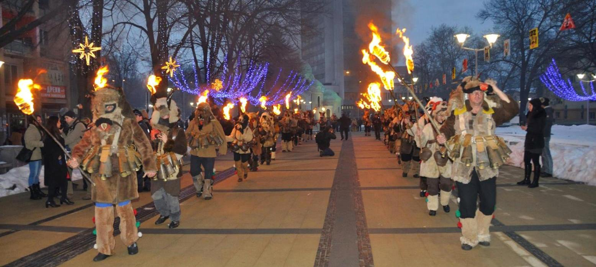

Перник е град в Западна България, административен център на област Перник и община Перник. Носи името Димитрово (в чест на починалия премиер Георги Димитров) от 20 юли 1949 до 19 януари 1962 г., когато отново е преименуван на Перник
От най-ранни времена Пернишката котловина е предоставяла благоприятни условия за живот. Тук е имало земя, годна за обработване, вода за пиене, просторни пасища, удобни места за строеж на жилища. Близките планини предоставят прекрасни условия за лов. От намерените археологични паметници може да се заключи, че първи прояви на живот в района са от 6 хиляди години преди новата ера. Селище има още от времето на тракийските царства. През римско време селището е заемало важно място по стратегическия път, свързващ Улпия Сердика (сега София) с Улпия Пауталия (сега Кюстендил).
ОЩЕ .........Разположен е на 25 km югозападно от София, на 59 km североизточно от Кюстендил, на 70 km северно от Благоевград.
ОЩЕ ......... По последни данни на НСИ към 2015 г. населението му е от 74 824 души, което го прави най-многочисления град в Западна България след столицата София и на 11-то място в страната
ОЩЕ .........